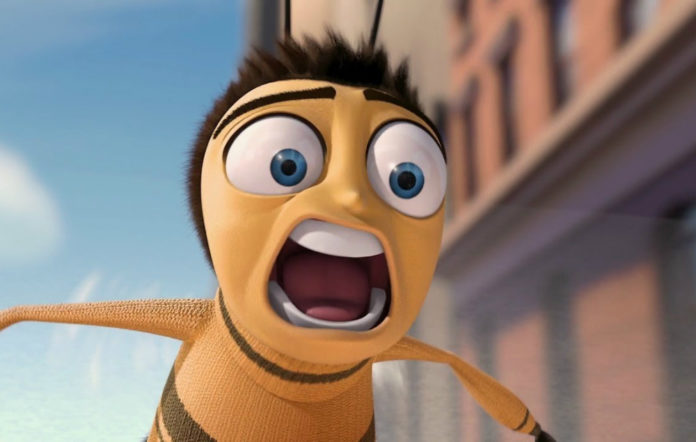

JESUS CHROIST

I HEARD...
A perfect report card, all B's.
Very proud.
Ma! I got a thing going here.
- You got lint on your fuzz.
- Ow! That's me!
- Wave to us! We'll be in row 118,000.
- Bye!
Barry, I told you,
stop flying in the house!
- Hey, Adam.
- Hey, Barry.
- Is that fuzz gel?
- A little. Special day, graduation.
Never thought I'd make it.
Three days grade school,
three days high school.
Those were awkward.
Three days college. I'm glad I took
a day and hitchhiked around the hive.
You did come back different.
- Hi, Barry.
- Artie, growing a mustache? Looks good.
- Hear about Frankie?
- Yeah.
- You going to the funeral?
- No, I'm not going.
Everybody knows,
sting someone, you die.
Don't waste it on a squirrel.
Such a hothead.
I guess he could have
just gotten out of the way.
I love this incorporating
an amusement park into our day.
That's why we don't need vacations.
Boy, quite a bit of pomp...
under the circumstances.
- Well, Adam, today we are men.
- We are!
- Bee-men.
- Amen!
Hallelujah!
Students, faculty, distinguished bees,
please welcome Dean Buzzwell.
Welcome, New Hive Oity
graduating class of...
...9:15.
That concludes our ceremonies.
HARD PIVOT TO QUANTUM PHYSICS
Quantum mechanics is a fundamental theory in physics that provides a description of the physical properties of nature at the scale of atoms and subatomic particles.[2]:1.1 It is the foundation of all quantum physics including quantum chemistry, quantum field theory, quantum technology, and quantum information science.
Classical physics, the description of physics that existed before the theory of relativity and quantum mechanics, describes many aspects of nature at an ordinary (macroscopic) scale, while quantum mechanics explains the aspects of nature at small (atomic and subatomic) scales, for which classical mechanics is insufficient. Most theories in classical physics can be derived from quantum mechanics as an approximation valid at large (macroscopic) scale.[3]
Quantum mechanics differs from classical physics in that energy, momentum, angular momentum, and other quantities of a bound system are restricted to discrete values (quantization), objects have characteristics of both particles and waves (wave-particle duality), and there are limits to how accurately the value of a physical quantity can be predicted prior to its measurement, given a complete set of initial conditions (the uncertainty principle.
BACK TO OUR LORD AND SAVIOR
Truly, the greatest symbol of new life is found in an empty tomb!
Romans 8:11 "But if the Spirit of Him who raised Jesus from the dead dwells in you, he who raised Christ from the dead will also give life to your mortal bodies through His Spirit who dwells in you."
You know I love suprises, I love them because you never know what to expect, and with suprises come imagination, and the Imagination is a Wonderful thing... Out of it we get –
A FAIRY that leaves money under a pillow for Teeth... A FAT Man in a red suit w/ a long white beard that delivers gifts... A RABBIT that lays colorful Eggs with sweet goodies in them ... but all of this it’s all empty celebration.
I promise You don’t need a bunny or some colorful eggs to excite my imagination about Easter. Easter stands alone on it’s own w/out any help! Our empty celebration is found in the empty tomb! Easter is not a special occassion - it's a way of life!
This morning I want preach on this subject "A Tomb With A View!"